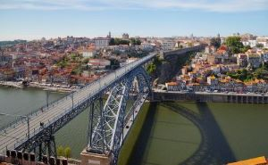

Porto
Home
Localização
Multimédia
Informação
Quizz
Viagem

Quizz
Informações Pessoais
Nome:
Apelido:
Email:
Quizz sobre o Porto
Qual é o famoso rio que passa pelo Porto?
Douro
Tejo
Minho
Selecione os pontos turísticos famosos do Porto:
Torre dos Clérigos
Fundação de Serralves
Livraria Lello
Qual é a população aproximada do Porto?
200,000
500,000
1,000,000
Quando foi a última vez que visitou o Porto?
Quão satisfeito está com a cidade do Porto?